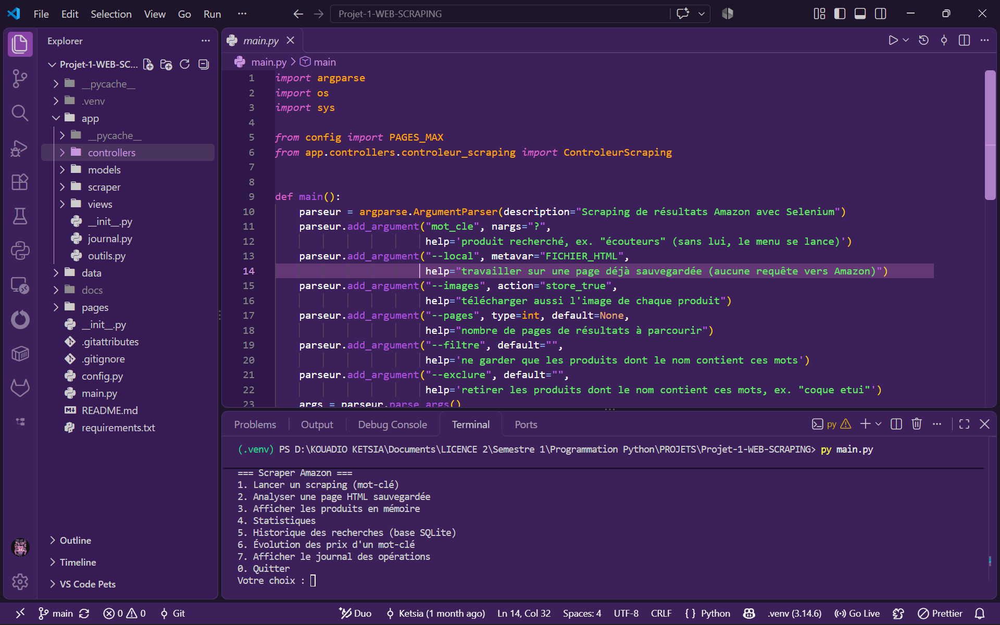
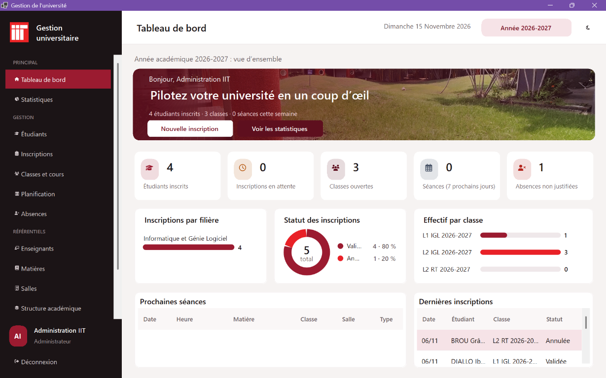
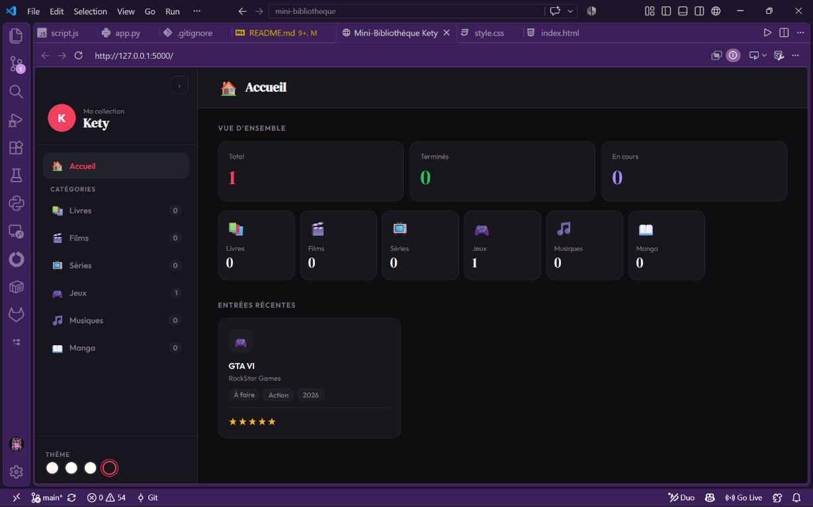
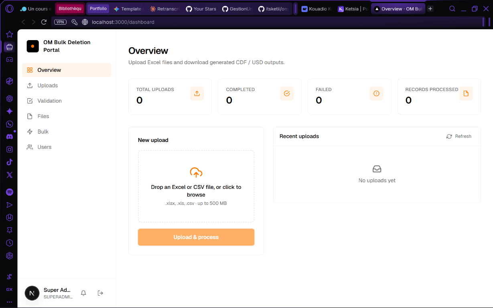

Il s'agit surtout de projets académiques
La plupart de mes projets viennent de mes cours à l'IIT. Chacun d'entre eux m'a appris quelque chose de nouveau. Glissez pour les découvrir.
Étudiante en 2e année en Informatique et Génie Logiciel à l'IIT (Institut Ivoirien de Technologie) de Grand-Bassam. J'apprends la programmation et le développement. J'aime donner vie à des projets qui résolvent des problèmes du quotidien tout en laissant libre cours à mon imagination dans le processus. Et j'apprends les bases de données pour viser, à terme, le métier de data engineer.
La plupart de mes projets viennent de mes cours à l'IIT. Chacun d'entre eux m'a appris quelque chose de nouveau. Glissez pour les découvrir.
Application console en Python qui extrait, nettoie et analyse automatiquement des données produits sur Amazon.
Application Windows Forms pour gérer les étudiants, inscriptions, plannings et statistiques universitaires.
Une bibliothèque personnelle pour gérer livres, films, séries, jeux, musiques et mangas.
Fork et conteneurisation d'un portail de transformation de fichiers Excel contenant des numéros MSISDN.

Application MVC permettant d'extraire, dédoublonner et exporter des données produits, puis d'analyser leurs prix.
Extraire automatiquement des données produits Amazon via Selenium, depuis un menu console ou une page HTML locale.
Python, Selenium, SQLite, Matplotlib, architecture MVC et Git/GitHub.
Limite : collecte pédagogique limitée ; respect des conditions Amazon et arrêt sur CAPTCHA.
Automatically extract Amazon product data with Selenium through a console menu or a saved HTML page.
Python, Selenium, SQLite, Matplotlib, MVC architecture and Git/GitHub.
Limit: limited educational collection; Amazon terms are respected and CAPTCHA stops the program.

Application Windows Forms à architecture 3 couches pour la gestion administrative et académique d'une université.
Application de bureau permettant de gérer les inscriptions, classes, cours, séances, absences, statistiques, impressions et exports d'une université.
Architecture à trois couches : modèles métier, accès aux données et interfaces Windows Forms / UserControl.
C#, .NET 8, Windows Forms, SQL Server, Microsoft.Data.SqlClient, ClosedXML, FontAwesome.Sharp et procédures stockées.
Une seule inscription par étudiant et par année, une année académique active, contrôle des chevauchements et vérification de la capacité des salles.
Kouadio Ketsia, Kodja Esther, Essane Jean-Noël et Biagou Marc-Aurel.
Contexte : projet académique réalisé pour le cours de Base de Données II à l'IIT.
Desktop application for managing university registrations, classes, courses, schedules, attendance, statistics, printing and exports.
Three-layer architecture: business models, data access and Windows Forms / UserControl interfaces.
C#, .NET 8, Windows Forms, SQL Server, Microsoft.Data.SqlClient, ClosedXML, FontAwesome.Sharp and stored procedures.
One registration per student and academic year, one active year, schedule collision checks and room capacity validation.
Kouadio Ketsia, Kodja Esther, Essane Jean-Noël and Biagou Marc-Aurel.
Context: academic project created for the Database II course at IIT.

Application web personnelle avec API REST pour gérer des contenus et suivre leur statut, leur genre et leur progression.
Centraliser dans une bibliothèque personnelle les livres, films, séries, jeux, musiques et mangas.
Backend Flask / SQLite avec API REST et interface HTML, JavaScript et CSS.
Centralize books, movies, shows, games, music and manga in a personal library.
Flask / SQLite backend with a REST API and HTML, JavaScript and CSS interface.

Projet Next.js / Node.js permettant de transformer des fichiers Excel en deux fichiers TXT conformes aux règles métier. Fork compris et conteneurisé avec Docker Compose.
Remplacer un traitement Excel manuel par un portail automatisé de formatage de numéros MSISDN.
Next.js, React, Tailwind CSS, Node.js, Express, MySQL, ExcelJS, Multer, Docker et Docker Compose.
Ma participation : fork du projet, compréhension du fonctionnement, configuration Docker et conteneurisation des services.
Contexte : l'application ne réalise aucune suppression ou opération télécom réelle ; elle génère uniquement des fichiers formatés.
Replace a manual Excel process with an automated MSISDN number formatting portal.
Next.js, React, Tailwind CSS, Node.js, Express, MySQL, ExcelJS, Multer, Docker and Docker Compose.
My contribution: project fork, code understanding, Docker configuration and service containerization.
Context: the application performs no real deletion or telecom provisioning; it only generates formatted files.
Après l'obtention de mon BAC D en 2025, j'ai rejoint l'IIT avec l'envie de transformer ma curiosité pour la technologie en compétences concrètes. Ma première année m'a permis de consolider mes bases en programmation, de participer à des hackathons et de réaliser un stage de découverte au Groupement Orange Service (GOS). Ces expériences m'ont appris à travailler avec méthode et à mieux comprendre les exigences du monde professionnel. Aujourd'hui en 2e année d'Informatique et Génie Logiciel, je poursuis cette progression avec la même rigueur. Mon objectif est de m'orienter vers la data, plus particulièrement le data engineering. Je suis convaincue que les données sont au cœur de l'évolution de l'informatique et qu'elles constituent aussi le socle sur lequel l'intelligence artificielle peut se développer.
Je conçois des applications mobiles avec Flutter et Dart, en cherchant à créer des interfaces simples, utiles et adaptées aux besoins du quotidien. Chaque projet me permet de progresser dans la conception d'interfaces et la logique applicative.
Je développe des sites et interfaces web en HTML, CSS et JavaScript, avec une attention particulière portée à la structure, au responsive design et à l'expérience utilisateur. Je consolide actuellement mes connaissances en frontend et j'apprends progressivement le développement backend.
Je travaille avec SQL et la modélisation de bases de données, notamment pour concevoir des structures cohérentes et exploiter les données efficacement. Je développe également des formulaires avec Windows Forms. Je commence en parallèle à approfondir le data engineering, en particulier la conception de pipelines et les différentes étapes de traitement des données.
Je m’investis dans la vie étudiante en tant que conseillère du club d’anglais et trésorière du club d’informatique de l’IIT.
En dehors de l’informatique, je me ressource à travers la musique, les jeux vidéo, le cyclisme et le basketball.
Ouverte aux échanges et aux projets en développement web, mobile et data.
M'écrireUne idée d'application ou de site ? Dites-moi ce que vous avez en tête. Je réponds sous quelques jours, avec des questions ou une première proposition.